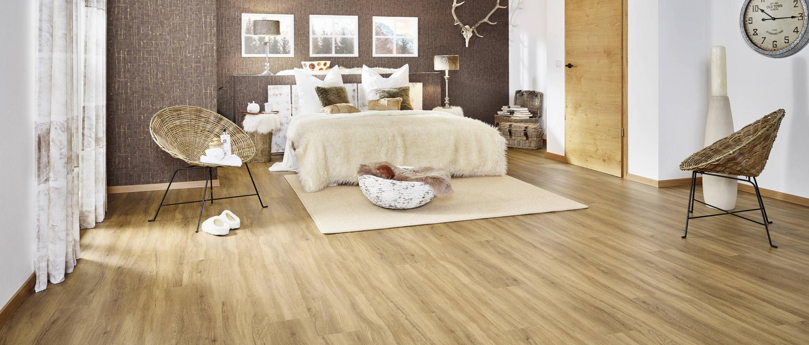

Designböden

Designböden (Vinylböden) gibt es in unterschiedlichen Materialstärken:
- 2,5 mm für die vollflächige Verklebung,
- 4,5 bis 5 mm für eine schwimmende Verlegung im Clic-System und
- 8 bis 10 mm mit einer Holzträgerplatte, für eine schwimmende Verlegung im Clic-System.
Auf der Grundschicht aus Kunststoff liegt das Dekorpapier und darüber die transparente Nutzschicht. Diese ist die Basis für die Klassifizierung in die entsprechenden Einsatzbereiche. Zur Wahl stehen eine Vielzahl von Holz- und auch Fliesenoptiken.
Gerne beraten wir Sie bei der Wahl Ihres Fußbodens. Besuchen Sie uns in unserer Ausstellung oder rufen Sie uns an unter 05207 9563210. Auf Wunsch beraten wir Sie auch gerne vor Ort.